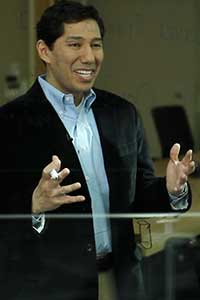
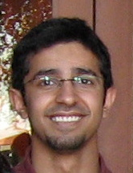

John Williams
Read more here
Professor John Williams was recently named alongside Bill Gates and Larry Ellison as one of the 50 most powerful people for Computer Networks in the world.
He is a MIT Professor of Information Engineering within the Engineering Systems Division and Department of Civil and Environmental Engineering. He also heads the Grid/Agent Computing Program at MIT, which develops distributed systems that simulate U.S. critical infrastructure.
Most importantly, he serves as the Director for the MIT GDC (Auto-ID Lab, Geonumerics Group, Center for Grid Computing, and Intelligent Engineering Systems Lab).
Internet of Things Group; Intelligent Engineering Group; Software Architecture Group

Abel Sanchez
Read more here
Dr. Abel Sanchez has long been regarded as a ranking expert for Smart Grid Objects and Interoperability. He also specializes in Sharing Rules, Interoperable Messaging, Global Engineering, Design Networks, Distributed Data Stores, Multicore, Smart Cities, and Spatial Visualization.
In addition to teaching Architecting and Engineering Software Systems at MIT, he is a Ford Foundation Fellow and National Research Council of the National Academies Fellow.
Most importantly, he serves as the Executive Director and Chief Technology Architect for the MIT GDC.
Internet of Things Group; Intelligent Engineering Group; Software Architecture Group
Christopher Leonardi
Dr. Leonardi holds a Ba. in Mechanical Engineering from James Cook University and a Ph.D. in Civil Engineering from Swansea University. His research interests include computational modeling of fluid-structure interaction, simulation of non-Newtonian flows, and characterization of the dynamic behavior of bulk materials. Particular fields of expertise include the lattice Boltzmann method (LBM) for fluid flows, the discrete element method (DEM) for discontinuous systems, and the finite element method (FEM) for solid mechanics problems.
Outside of academic pursuits Dr. Leonardi has spent five years consulting to industry in the Australasian region, applying both computational and analytical techniques to solve problems in the mechanical, structural, and geotechnical engineering disciplines. Research efforts are targeted at the continued development of multi-physics numerical simulation software for application to oil reservoir modeling.
Internet of Things Group; Software Design Group; High Performance Computing Geospatial Platform Group
Sergio Herrero-Lopez
Sergio Herrero is currently a Ph.D. candidate at MIT. At the MIT IESL Lab, he was worked on the integration of massively threaded multiprocessor arrays in Hadoop and the modification of its pipeline, in order to minimize latency and allow the execution of stream learning algorithms. At Microsoft Research, he constructed a Network Diagnostics Service for Microsoft Robotics Developer Studio capable of troubleshooting connectivity and security problems within the Decentralized Software Services (DSSP 1.0) network graph of a distributed robotics application; in addition, he focused on Real-Time Visualizations of the status of connectivity graphs using Silverlight 2.0. At the MIT Auto-ID Lab, he constructed a Distributed In-Memory Database for the RFID Network. This project consisted of the design of a scalable and flexible architecture capable of accommodating and handling the information flow generated by thousands of millions of RFID tags as they move through the supply chain.
Internet of Things Group; Software Design Group; High Performance Computing Geospatial Platform Group

Zeid Alghareeb
Zeid received his Master of Science in Petroleum Engineering from Stanford University in 2009. Prior to joining GDC, Zeid worked as a petroleum engineer developing and maintaining oil increments at Saudi Aramco Oil Company. His main interests include production optimization, and pore scale modeling and analysis. Zeid is currently a PhD candidate at MIT and serves as a technical lead at GDC.
High Performance Computing Geospatial Platform Group
Maria Arenas
As MIT GDC Platform Visualization Lead in the Semantic Analysis Unit of the High Performance Computing Geospatial Platform Group, Maria works on converting our storyboard visualizations into functional platform demonstrations. These functional demonstrations are critical in the milestone development of the MIT Geospatial Platform.
High Performance Computing Geospatial Platform Group
Marios Assiotis
Marios holds a Bachelor of Science in Computer Science and Engineering from MIT. He has worked as a software engineer with Apple Computer, a software developer with the MIT Comparative Media Studies, a systems administrator at the Teacher Education Department, and as a researcher with the MIT Media Lab.
IInternet of Things Group
Zeyar Aung
Dr. Zeyar Aung is currently Assistant Professor in the Computing and Information Science Program of Masdar Institute. Dr. Aung graduated with a PhD in Computer Science from the National University of Singapore in 2006. Prior to joining Masdar Institute, he worked as a research fellow for Infocomm Research, A* Star (Agency for Science, Technology and Research), Singapore from 2006 to 2010. Dr. Aung’s areas of expertise include data mining, machine learning, database management, bioinformatics and chemoinformatics. He is a professional member of the International Society for Computational Biology (ISCB).
High Performance Computing Geospatial Platform Group